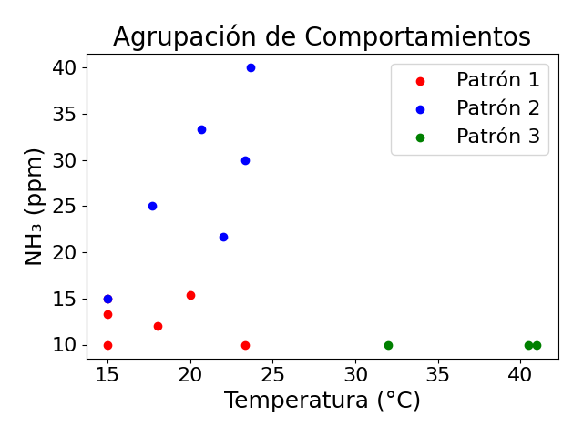

📊 Informe Automático IoT - Granjas AvÃcolas
📅 Fecha: 2025-07-10 16:55
📌 Agrupación de comportamientos

- Patrón 1: 🟠Polvo y NH₃ elevados: alerta respiratoria.
- Patrón 2: ℹ️ Combinación atÃpica: requiere seguimiento.
- Patrón 3: ℹ️ Combinación atÃpica: requiere seguimiento.
📈 Tendencias principales

🗺 Mapa de calor de variables por patrón